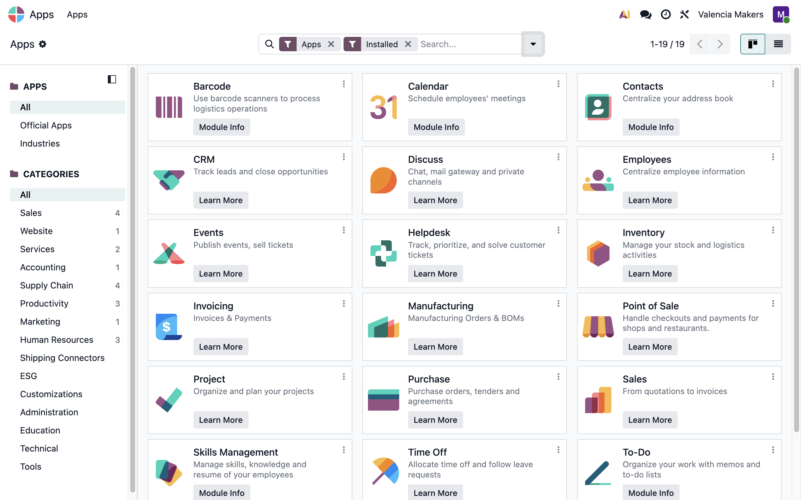
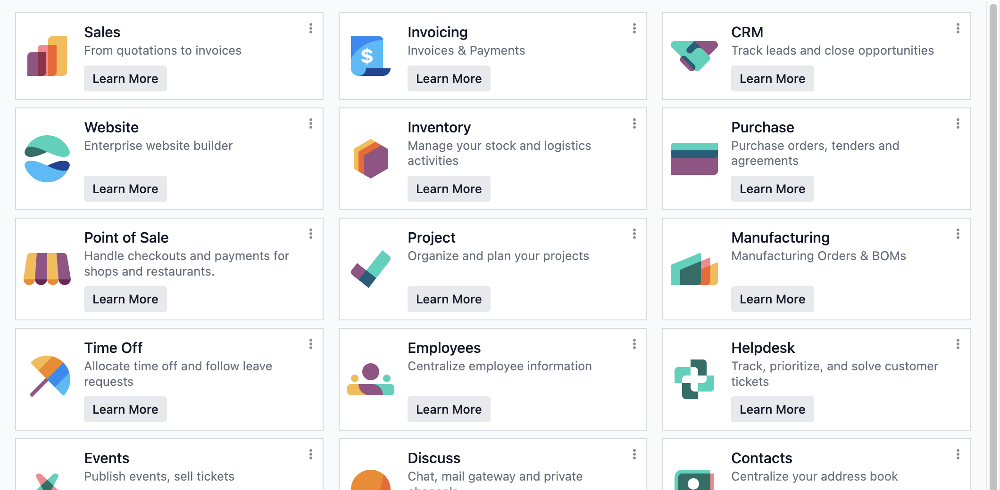
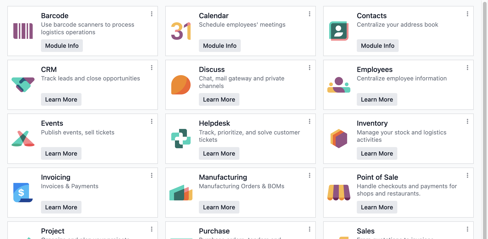

In standard Odoo, the Apps page is ordered by the hidden technical name of each app, so Employees is filed under hr and Invoicing under account. Apps Page Sort orders it by the name on the card, alphabetically.
Standard

With Apps Page Sort

Cards and list rows are ordered by the app name visible to the user.
The order follows each user's own language setting, with accented names sorted correctly.
Apps are sorted in front of other modules when you clear the Apps filter.
Nothing is stored; uninstall the module and the original order returns.
Other lists of modules maintain Odoo's default order.
This module only requires Odoo's base module, so it works with any set of apps, on both Community and Enterprise.